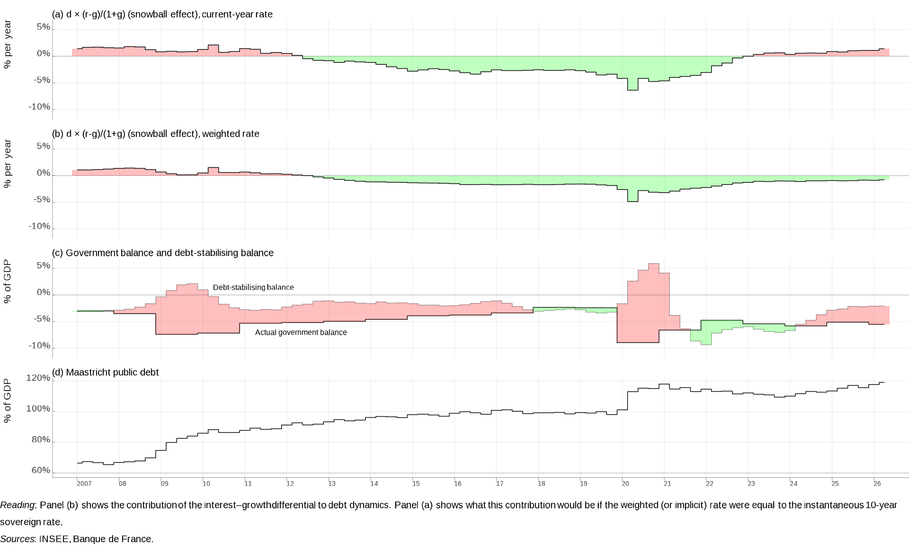

Combien coûte la stabilisation de la dette publique à l’horizon 2032
De l’intuition aux simulations avec debtwatch 2
OFCN 2026
Xavier Timbeau
mardi 17 novembre 2026
Définition et Méthode
Définition et Méthode
Principaux résultats
Conclusions
Annexes
Définition
Effort fiscal ou budgétaire : opposé du cumul des impulsions (primaires, structurelles) budgétaires de 2026 à 2032
\[ E_f = -\sum_{t=2026}^{2032} \Delta s^*_p \]
On cherche donc à calculer l’effort budgétaire nécessaire poour stabiliser la dette à 120% en 2032
on peut avoir des objectifs alternatifs (stabiliser la dette en 2037, stabiliser la dette à un ratio alternatif)
on veut évaluer l’impact des hypothèses (décomposition, variantes)
peut être comparé à Jaravel et al. (2026) avec quelques précautions
Peut être calculé sur une autre période (2027-2032 par ex.)
Avertissement
Différent de la notion d’effort budgétaire employée pâr l’IFE|OFCE dans la prévision ou le concept découlant de la Dépense Publique Nette du PSC (i.e. les variations délibérées du solde structurel, hors élasticité des P.O. par ex.)
Méthode
1 Un modèle simple avec la dynamique d’un écart de production, du prix (du PIB), du potentiel ; l’effet des impulsions sur l’activité (multiplicateur) ; l’effet de l’activité sur les prix, les taux d’intérêt (un taux de marché, un taux de long terme égale à la croissance en volume plus l’inflation plus un écart critique de long terme – possiblement nul), une règle budgétaire linéaire, des perturbations aléatoires, la dynamique de la dette publique (ratio sur PIB), un calcul des déficits (effectif, primaire et structurel), des tendances des finances publiques
2 Une calibration du modèle (pas d’estimation à ce stade). Les principaux paramètres sont le multiplicateur, la persistance de l’écart de production, la maturité de la dette, la réaction de l’inflation.
3 L’utilisation de données récentes (derniers comptes disponibles, prévision de l’IFE|OFCE de l’automne 2026) pour les conditions initiales.
3 Un calcul d’une impulsion budgétaire “optimale”, c’est-à-dire minimisant l’impact (négatif) sur le PIB d’une consolidation budgétaire sous contrainte d’un objectif et une résolution numérique.
Basé sur Timbeau et al. (2012), Heyer et Timbeau (2017), Timbeau et al. (2021), Blanchard et al. (2021), Heyer et al. (2025)
Documenté en détail (méthodes et résultats, reproductible) :
Une étude spéciale dans la dernière prévision de l’IFE|OFCE (Heyer et al. 2026): Combien coûte de stabiliser la dette (ofce.fr/prev/prev2609/es/ajustement.html)
Un document de travail (version anglaise de l’ES) (Timbeau 2026) What does it cost to stabilize public debt? (ofce.fr/wp/2026/13)
Un dépôt github pour accéder au code source et reproduire (ou plus) les résultats github.com/ofce/wp-xt-adjust
Principaux résultats
Définition et Méthode
Principaux résultats
Conclusions
Annexes
Quel effort et quels facteurs ?
Exemple de trajectoires
Les variantes
| Target | Year |
From 2026 to target year
|
Long term
|
||||
|---|---|---|---|---|---|---|---|
| Fiscal effort | Output loss | Debt | Fiscal effort | ||||
| 1 | IFE|OFCE forecast 2609 | Debt | 2032 | 3.4 (± 0.6) | 1.5 (± 0.4) | 120 (± 4.5) | 3.2 (± 0.8) |
| 2 | IFE|OFCE forecast 2609, AMECO output gap | Debt | 2032 | 3.3 (± 0.6) | 1.5 (± 0.4) | 120 (± 4.5) | 3.1 (± 0.8) |
| 3 | Lower rates (r-g: 0%) | Debt | 2032 | 3.1 (± 0.6) | 1.4 (± 0.4) | 120 (± 4.5) | 2.7 (± 0.8) |
| 4 | Higher rates (r-g: +1.7%) | Debt | 2032 | 4.2 (± 0.6) | 1.7 (± 0.4) | 121 (± 4.6) | 4.5 (± 0.8) |
| 5 | No impulse in 2027 | Debt | 2032 | 3.6 (± 0.6) | 1.6 (± 0.4) | 120 (± 4.5) | 3.2 (± 0.8) |
| 6 | Two years earlier | Debt | 2030 | 3.7 (± 0.4) | 1.9 (± 0.3) | 122 (± 4.1) | 3.2 (± 0.8) |
| 7 | Five years later | Debt | 2037 | 3.2 (± 0.7) | 0.9 (± 0.5) | 120 (± 5.3) | 3.2 (± 0.8) |
| 8 | Optimal impulses from 2026 | Debt | 2032 | 3.2 (± 0.6) | 1.4 (± 0.4) | 120 (± 4.5) | 3.2 (± 0.8) |
| 9 | Debt stabilisation in 2032 | Balance | 2032 | 2.8 | 1.2 (± 0.3) | 125 (± 5.6) | 3.2 |
| 10 | Debt stabilisation in 2030 | Balance | 2030 | 2.5 | 1.5 (± 0.3) | 123 (± 4.1) | 3.2 |
| 11 | Debt declining from 2032 | Balance | 2032 | 3.2 | 1.3 (± 0.3) | 124 (± 5.6) | 3.7 |
| 12 | Zero multipliers | Debt | 2032 | 2.9 (± 0.5) | 0.5 (± 0.3) | 120 (± 4.0) | 3.2 (± 0.7) |
| 13 | More persistent output gap | Debt | 2032 | 3.9 (± 0.6) | 2.0 (± 0.3) | 121 (± 4.7) | 3.2 (± 0.8) |
| 14 | Higher multipliers | Debt | 2032 | 3.5 (± 0.6) | 1.9 (± 0.4) | 120 (± 4.7) | 3.2 (± 0.8) |
| 15 | Cycle-dependent multipliers | Debt | 2032 | 3.6 (± 0.6) | 1.7 (± 0.4) | 121 (± 4.7) | 3.2 (± 0.8) |
Et si la dette avait été de 60% ?
| Target | Year |
From 2026 to target year
|
Long term
|
||||
|---|---|---|---|---|---|---|---|
| Fiscal effort | Output loss | Debt | Fiscal effort | ||||
| 1 | IFE|OFCE forecast 2609 | Debt | 2032 | 3.3 (± 0.3) | 1.5 (± 0.3) | 59 (± 2.8) | 2.7 (± 0.5) |
| 2 | Higher rates (r-g: +1.7%) | Debt | 2032 | 3.8 (± 0.3) | 1.6 (± 0.3) | 59 (± 2.9) | 3.6 (± 0.5) |
| 3 | Higher rates (r-g: +0.5%) | Debt | 2032 | 3.4 (± 0.3) | 1.6 (± 0.3) | 59 (± 2.8) | 3.0 (± 0.5) |
| 4 | No impulse in 2027 | Debt | 2032 | 3.5 (± 0.3) | 1.6 (± 0.3) | 59 (± 2.8) | 2.7 (± 0.5) |
| 5 | Two years earlier | Debt | 2030 | 4.0 (± 0.2) | 2.1 (± 0.3) | 60 (± 2.2) | 2.7 (± 0.5) |
| 6 | Five years later | Debt | 2037 | 2.8 (± 0.4) | 0.8 (± 0.4) | 60 (± 2.9) | 2.7 (± 0.5) |
| 7 | Optimal impulses from 2026 | Debt | 2032 | 3.0 (± 0.3) | 1.4 (± 0.3) | 60 (± 2.7) | 2.7 (± 0.5) |
| 8 | Debt stabilisation in 2032 | Balance | 2032 | 2.8 | 1.3 (± 0.3) | 65 (± 3.6) | 3.0 |
| 9 | Zero multipliers | Debt | 2032 | 2.9 (± 0.3) | 0.5 (± 0.3) | 60 (± 2.5) | 2.7 (± 0.4) |
| 10 | More persistent output gap | Debt | 2032 | 3.7 (± 0.3) | 2.0 (± 0.3) | 59 (± 2.7) | 2.7 (± 0.5) |
| 11 | Higher multipliers | Debt | 2032 | 3.2 (± 0.3) | 1.9 (± 0.4) | 59 (± 2.8) | 2.7 (± 0.5) |
| 12 | Cycle-dependent multipliers | Debt | 2032 | 3.5 (± 0.3) | 1.7 (± 0.4) | 59 (± 2.8) | 2.7 (± 0.5) |
Ecart critique et dette : les liaisons dangereuses
Conclusions
Définition et Méthode
Principaux résultats
Conclusions
Annexes
L’importance de l’écart critique
la dynamique de l’écart critique (renouvellement de la dette publique) est critique. Le travail de Raul Sampognaro est important pour affiner cette dimension.
un écart critique négatif incite à plus de dette publique, parce qu’il facilite l’effort budgétaire
- le long terme de l’écart critique l’est aussi
- un impact non négligeable de la conjoncture
Prolongements et futurs travaux
- une version plus développée du modèle de dette (à la Sampognaro, tranches excplicites de dette, stratégie de renouvellement, liquidité endogène)
- une version infra-annuelle (expérimentale) pour plus de finesse de représentation de certains mécanismes (comme le multiplicateur variable dans le cycle)
- une application aux pays de la zone euro/USA/GB, une version liée par le commerce à la Timbeau et al. (2012)
- l’ajout de la balance courante dans l’analyse, un comportement d’épargne explicite
Références
Blanchard, Olivier, Alvaro Leandro, et Jeromin Zettelmeyer. 2021. « Redesigning EU Fiscal Rules: From Rules to Standards ». Economic Policy 36 (106): 195‑236. https://doi.org/10.1093/epolic/eiab003.
Heyer, Eric, Mathieu Plane, Xavier Ragot, Raul Sampognaro, et Xavier Timbeau. 2025. « Quelles trajectoires pour les finances publiques de la France ? » Policy Brief de l’OFCE, juillet 11. https://www.ofce.sciences-po.fr/pdf/pbrief/2025/OFCEpbrief146.pdf.
Heyer, Eric, et Xavier Timbeau. 2017. « Quelles perspectives pour l’économie française au cours du prochain quiquennat ? » Policy brief de l’OFCE, nᵒ 12 (février). https://www.ofce.sciences-po.fr/pdf/pbrief/2017/OFCEpbrief12.pdf.
Heyer, Eric, Xavier Timbeau, Céline Antonin, et al. 2026. La croissance mondiale entre guerre et IA, prévision d’automne 2026 de l’OFCE. In Revue de l’OFCE, édité par Eric Heyer et Xavier Timbeau. https://www.ofce.fr/prev/prev2609/.
Jaravel, Xavier, Xavier Ragot, Jean-Luc Tavernier, et Natacha Valla. 2026. Mission sur la transparence des finances publiques. Rapport pour le Ministre des Finances, République Française. https://presse.economie.gouv.fr/mission-sur-la-transparence-des-finances-publiques.
Timbeau, Xavier. 2026. « What does it cost to stabilize public debt? » document de travail de l’OFCE, nᵒˢ 2026-13 (novembre). https://www.ofce.fr/wp/2026/13.
Timbeau, Xavier, Lars Andersen, Céline Antonin, et al. 2012. Failed Austerity in Europe The Way Out. First Report. https://www.iags-project.org/documents/iags_report2013.pdf.
Timbeau, Xavier, Elliot Aurissergues, et Eric Heyer. 2021. « La dette publique au XXI siècle. Une analyse de la dynamique de la dette publique avec Debtwatch ». Policy brief de l’OFCE, octobre 11. https://www.ofce.sciences-po.fr/pdf/pbrief/2021/OFCEpbrief93.pdf.
Annexes
Définition et Méthode
Principaux résultats
Conclusions
Annexes
Effort fiscal (approche naïve)
|
Government balance (2026)
|
Interest rate
|
GDP growth
|
Debt- stabilising primary balance |
Fiscal effort
|
||||||
|---|---|---|---|---|---|---|---|---|---|---|
| primary | structural primary | weighted current |
market current |
long-term | 2026 | potential | % of GDP | € billion (2026 GDP) |
||
| 1 | −2.9 | — | — | 5.1 | — | 2.2 | — | 3.4 | 6.3 | 192 |
| 2 | — | −2.2 | — | 5.1 | — | 2.2 | — | 3.4 | 5.6 | 171 |
| 3 | −2.9 | — | — | 5.1 | — | — | 2.9 | 2.6 | 5.5 | 167 |
| 4 | — | −2.2 | — | 5.1 | — | — | 2.9 | 2.6 | 4.8 | 145 |
| 5 | −2.9 | — | 2.3 | — | — | 2.2 | — | 0.1 | 3.0 | 92 |
| 6 | — | −2.2 | 2.3 | — | — | 2.2 | — | 0.1 | 2.3 | 71 |
| 7 | −2.9 | — | 2.3 | — | — | — | 2.9 | −0.7 | 2.2 | 67 |
| 8 | — | −2.2 | 2.3 | — | — | — | 2.9 | −0.7 | 1.5 | 46 |
| 9 | −2.9 | — | — | — | 3.4 | 2.2 | — | 1.4 | 4.3 | 131 |
| 10 | — | −2.2 | — | — | 3.4 | 2.2 | — | 1.4 | 3.6 | 110 |
| 11 | −2.9 | — | — | — | 3.4 | — | 2.9 | 0.6 | 3.5 | 106 |
| 12 | — | −2.2 | — | — | 3.4 | — | 2.9 | 0.6 | 2.8 | 85 |
Historique dette France

Multiplicateurs
Efforts suivant les horizons et les multiplicateurs
Fil de l’eau

Combien coûte la stabilisation de la dette publique à l’horizon 2032 OFCN 2026 XT